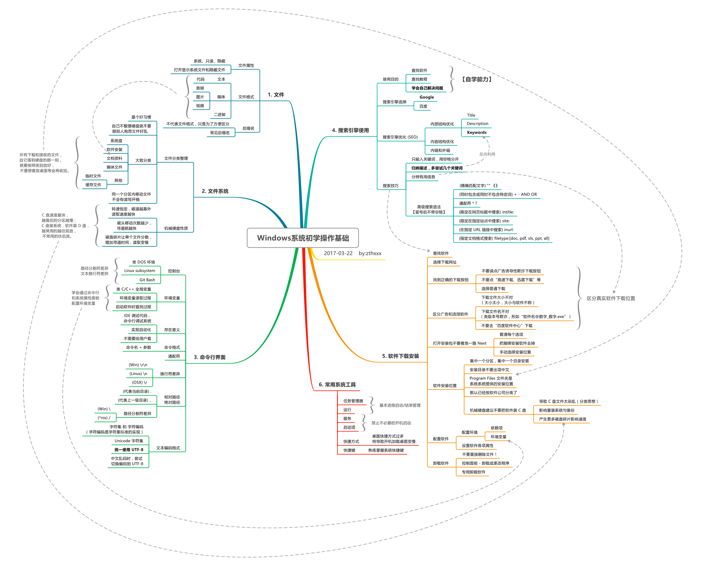

<!DOCTYPE html><html lang="en"><head><meta charset="utf-8"><title>Windows 系统入门操作导图 | Zthxxx&#39;s Wiki</title><meta name="keywords" content="Windows 系统入门操作导图"><meta name="viewport" content="width=device-width,initial-scale=1,maximum-scale=1"><meta name="description" content="本导图适合刚接触电脑，刚开始使用 Windows 系统，以后可能会经常使用电脑做技术工作，但目前零基础的新手，作为入门引导。 目的为改善现有不良使用习惯，规范一些操作行为，了解一些操作背后的原理，避免安装病毒和流氓软件，简单提高电脑使用效率。 整个导图分为 「1-文件、2-文件系统、3-命令行界面、4-搜索引擎使用、5-软件下载安装、6-常用系统工具」 ，共六个大点，请依次阅读学习；整个主线以第五"><meta property="og:type" content="article"><meta property="og:title" content="Windows 系统入门操作导图"><meta property="og:url" content="http://wiki.zthxxx.me/wiki/计算机基础知识/Windows系统入门操作导图/index.html"><meta property="og:site_name" content="Zthxxx&#39;s Wiki"><meta property="og:description" content="本导图适合刚接触电脑，刚开始使用 Windows 系统，以后可能会经常使用电脑做技术工作，但目前零基础的新手，作为入门引导。 目的为改善现有不良使用习惯，规范一些操作行为，了解一些操作背后的原理，避免安装病毒和流氓软件，简单提高电脑使用效率。 整个导图分为 「1-文件、2-文件系统、3-命令行界面、4-搜索引擎使用、5-软件下载安装、6-常用系统工具」 ，共六个大点，请依次阅读学习；整个主线以第五"><meta property="og:locale" content="en"><meta property="og:image" content="http://wiki.zthxxx.me/wiki/计算机基础知识/Windows系统入门操作导图/Windows系统初学操作基础.svg"><meta property="og:updated_time" content="2018-04-01T03:04:14.161Z"><meta name="twitter:card" content="summary"><meta name="twitter:title" content="Windows 系统入门操作导图"><meta name="twitter:description" content="本导图适合刚接触电脑，刚开始使用 Windows 系统，以后可能会经常使用电脑做技术工作，但目前零基础的新手，作为入门引导。 目的为改善现有不良使用习惯，规范一些操作行为，了解一些操作背后的原理，避免安装病毒和流氓软件，简单提高电脑使用效率。 整个导图分为 「1-文件、2-文件系统、3-命令行界面、4-搜索引擎使用、5-软件下载安装、6-常用系统工具」 ，共六个大点，请依次阅读学习；整个主线以第五"><meta name="twitter:image" content="http://wiki.zthxxx.me/wiki/计算机基础知识/Windows系统入门操作导图/Windows系统初学操作基础.svg"><link rel="alternate" href="/atom.xml" title="Zthxxx&#39;s Wiki" type="application/atom+xml"><link rel="icon" href="/favicon.ico"><link rel="stylesheet" href="/libs/font-awesome/css/font-awesome.min.css"><link rel="stylesheet" href="/libs/open-sans/styles.css"><link rel="stylesheet" href="/libs/source-code-pro/styles.css"><link rel="stylesheet" href="/css/style.css"><script src="/libs/jquery/2.1.3/jquery.min.js"></script><script src="/libs/jquery/plugins/cookie/1.4.1/jquery.cookie.js"></script><link rel="stylesheet" href="/libs/lightgallery/css/lightgallery.min.css"><link rel="stylesheet" href="/libs/justified-gallery/justifiedGallery.min.css"><script async src="//dn-lbstatics.qbox.me/busuanzi/2.3/busuanzi.pure.mini.js"></script></head></html><body><div id="container"><header id="header"><div id="header-main" class="header-inner"><div class="outer"><a href="/" id="logo"><i class="logo"></i> <span class="site-title">Zthxxx&#39;s Wiki</span></a><nav id="main-nav"> <a class="main-nav-link" href="/">首页</a> <a class="main-nav-link" href="/archives">归档</a> <a class="main-nav-link" href="/categories">分类</a> <a class="main-nav-link" href="/tags">标签</a> <a class="main-nav-link" href="/about">关于</a></nav><div id="search-form-wrap"><form class="search-form"> <input type="text" class="ins-search-input search-form-input" placeholder="Search"> <button type="submit" class="search-form-submit"></button></form><div class="ins-search"><div class="ins-search-mask"></div><div class="ins-search-container"><div class="ins-input-wrapper"> <input type="text" class="ins-search-input" placeholder="Type something..."><span class="ins-close ins-selectable"><i class="fa fa-times-circle"></i></span></div><div class="ins-section-wrapper"><div class="ins-section-container"></div></div></div></div><script>window.INSIGHT_CONFIG={TRANSLATION:{POSTS:"Posts",PAGES:"Pages",CATEGORIES:"Categories",TAGS:"Tags",UNTITLED:"(Untitled)"},ROOT_URL:"/",CONTENT_URL:"/content.json"}</script><script src="/js/insight.js"></script></div></div></div><div id="main-nav-mobile" class="header-sub header-inner"><table class="menu outer"><tr><td><a class="main-nav-link" href="/">首页</a></td><td><a class="main-nav-link" href="/archives">归档</a></td><td><a class="main-nav-link" href="/categories">分类</a></td><td><a class="main-nav-link" href="/tags">标签</a></td><td><a class="main-nav-link" href="/about">关于</a></td><td><div class="search-form"> <input type="text" class="ins-search-input search-form-input" placeholder="Search"></div></td></tr></table></div></header><div class="outer"><aside id="sidebar"><div class="widget-wrap" id="categories"><h3 class="widget-title"> <span>categories</span> &nbsp;<a id="allExpand" href="#"><i class="fa fa-angle-double-down fa-2x"></i></a></h3><ul class="unstyled" id="tree"><li class="directory"><a href="#" data-role="directory"><i class="fa fa-folder"></i> &nbsp; 技术开发</a><ul class="unstyled" id="tree"><li class="directory"><a href="#" data-role="directory"><i class="fa fa-folder"></i> &nbsp; Git</a><ul class="unstyled" id="tree"><li class="file"><a href="/wiki/技术开发/Git/Git-commit-message-基本规范/">Git commit message 基本规范</a></li><li class="file"><a href="/wiki/技术开发/Git/Git-清理已追踪或未添加追踪的文件/">Git 清理已追踪或未添加追踪的文件</a></li></ul></li><li class="directory"><a href="#" data-role="directory"><i class="fa fa-folder"></i> &nbsp; Linux</a><ul class="unstyled" id="tree"><li class="directory"><a href="#" data-role="directory"><i class="fa fa-folder"></i> &nbsp; Shell</a><ul class="unstyled" id="tree"><li class="file"><a href="/wiki/技术开发/Linux/Shell/awk-管道操作小结/">awk 管道操作小结</a></li></ul></li><li class="directory"><a href="#" data-role="directory"><i class="fa fa-folder"></i> &nbsp; Ubuntu</a><ul class="unstyled" id="tree"><li class="file"><a href="/wiki/技术开发/Linux/Ubuntu/Ubuntu-16-开机默认命令行界面/">Ubuntu 16.04 开机默认命令行界面</a></li></ul></li><li class="directory"><a href="#" data-role="directory"><i class="fa fa-folder"></i> &nbsp; Vim</a><ul class="unstyled" id="tree"><li class="file"><a href="/wiki/技术开发/Linux/Vim/Vim-粘贴模式/">Vim 粘贴模式</a></li></ul></li><li class="file"><a href="/wiki/技术开发/Linux/Linux-命令控制屏幕/">Linux 命令控制屏幕</a></li></ul></li><li class="directory"><a href="#" data-role="directory"><i class="fa fa-folder"></i> &nbsp; 前端</a><ul class="unstyled" id="tree"><li class="file"><a href="/wiki/技术开发/前端/Selenium-中使用-Chrome-路径问题/">Selenium 中使用 Chrome 路径问题</a></li><li class="file"><a href="/wiki/技术开发/前端/Webpack-中-css-import-使用-alias-相对路径/">Webpack 中 css import 使用 alias 相对路径</a></li><li class="file"><a href="/wiki/技术开发/前端/gulp-imagemin-使用与参数设置/">gulp-imagemin 使用与参数设置</a></li></ul></li><li class="directory"><a href="#" data-role="directory"><i class="fa fa-folder"></i> &nbsp; 架构</a><ul class="unstyled" id="tree"><li class="file"><a href="/wiki/技术开发/架构/IaaS-PaaS-SaaS-概念/">IaaS, PaaS, SaaS 概念</a></li></ul></li><li class="directory"><a href="#" data-role="directory"><i class="fa fa-folder"></i> &nbsp; 算法</a><ul class="unstyled" id="tree"><li class="file"><a href="/wiki/技术开发/算法/八大排序算法复杂度/">八大排序算法复杂度</a></li></ul></li><li class="directory"><a href="#" data-role="directory"><i class="fa fa-folder"></i> &nbsp; 软件工程</a><ul class="unstyled" id="tree"><li class="file"><a href="/wiki/技术开发/软件工程/GitHub团队任务管理流程/">GitHub 团队任务管理流程</a></li><li class="file"><a href="/wiki/技术开发/软件工程/语义化版本号-2-0-0/">语义化版本号 2.0.0</a></li></ul></li></ul></li><li class="directory"><a href="#" data-role="directory"><i class="fa fa-folder"></i> &nbsp; 生活学习</a><ul class="unstyled" id="tree"><li class="file"><a href="/wiki/生活学习/DISC-行为风格理论/">DISC 行为风格理论</a></li><li class="file"><a href="/wiki/生活学习/点滴人生观念信条/">点滴人生观念信条</a></li><li class="file"><a href="/wiki/生活学习/马斯洛需求层次理论/">马斯洛需求层次理论</a></li></ul></li><li class="directory"><a href="#" data-role="directory"><i class="fa fa-folder"></i> &nbsp; 程序语言</a><ul class="unstyled" id="tree"><li class="directory"><a href="#" data-role="directory"><i class="fa fa-folder"></i> &nbsp; CSS</a><ul class="unstyled" id="tree"><li class="file"><a href="/wiki/程序语言/CSS/CSS 属性声明顺序规范/">CSS 属性声明顺序规范</a></li></ul></li><li class="directory"><a href="#" data-role="directory"><i class="fa fa-folder"></i> &nbsp; Java</a><ul class="unstyled" id="tree"><li class="file"><a href="/wiki/程序语言/Java/Java-访问控制符/">Java 访问控制符</a></li></ul></li></ul></li><li class="directory"><a href="#" data-role="directory"><i class="fa fa-folder"></i> &nbsp; 艺术</a><ul class="unstyled" id="tree"><li class="directory"><a href="#" data-role="directory"><i class="fa fa-folder"></i> &nbsp; 平面设计</a><ul class="unstyled" id="tree"><li class="file"><a href="/wiki/艺术/平面设计/平面设计入门导图/">平面设计入门导图</a></li></ul></li></ul></li><li class="directory open"><a href="#" data-role="directory"><i class="fa fa-folder-open"></i> &nbsp; 计算机基础知识</a><ul class="unstyled" id="tree"><li class="directory"><a href="#" data-role="directory"><i class="fa fa-folder"></i> &nbsp; 图形图像</a><ul class="unstyled" id="tree"><li class="file"><a href="/wiki/计算机基础知识/图形图像/曲线调整工具/">曲线调整工具与直方图</a></li><li class="file"><a href="/wiki/计算机基础知识/图形图像/渐进式-JPEG-格式/">渐进式 JPEG 格式</a></li></ul></li><li class="file active"><a href="/wiki/计算机基础知识/Windows系统入门操作导图/">Windows 系统入门操作导图</a></li><li class="file"><a href="/wiki/计算机基础知识/字符集与字符编码/">字符集与字符编码</a></li></ul></li><li class="file"><a href="/wiki/index/">Welcome Zthxxx's Wiki Site</a></li></ul></div><script>$(document).ready(function(){var r="fa-folder-open",i="fa-folder",l="fa-angle-double-down",d="fa-angle-double-up";$(document).on("click",'#categories a[data-role="directory"]',function(a){a.preventDefault();var e=$(this).children(".fa"),s=e.hasClass(r),l=$(this).siblings("ul");e.removeClass(r).removeClass(i),s?(void 0!==l&&l.slideUp({duration:100}),e.addClass(i)):(void 0!==l&&l.slideDown({duration:100}),e.addClass(r))}),$('#categories a[data-role="directory"]').bind("contextmenu",function(a){a.preventDefault();var e=$(this).children(".fa"),s=e.hasClass(r),l=$(this).siblings("ul"),d=$.merge(l.find("li ul"),l),o=$.merge(l.find(".fa"),e);o.removeClass(r).removeClass(i),s?(d.slideUp({duration:100}),o.addClass(i)):(d.slideDown({duration:100}),o.addClass(r))}),$(document).on("click","#allExpand",function(a){a.preventDefault();var e=$(this).children(".fa"),s=e.hasClass(l);e.removeClass(l).removeClass(d),s?($("#sidebar .fa.fa-folder").removeClass("fa-folder").addClass("fa-folder-open"),$("#categories li ul").slideDown({duration:100}),e.addClass(d)):($("#sidebar .fa.fa-folder-open").removeClass("fa-folder-open").addClass("fa-folder"),$("#categories li ul").slideUp({duration:100}),e.addClass(l))})})</script><div id="toTop" class="fa fa-angle-up"></div></aside><section id="main"><article id="post-计算机基础知识/Windows系统入门操作导图" class="article article-type-post" itemscope="" itemprop="blogPost"><div class="article-inner"><header class="article-header"><div class="article-meta"><div class="article-category"><i class="fa fa-folder"></i> <a class="article-category-link" href="/categories/计算机基础知识/">计算机基础知识</a></div><div class="article-date"><i class="fa fa-calendar"></i> <a href="/wiki/计算机基础知识/Windows系统入门操作导图/"><time datetime="2017-03-22T12:18:52.000Z" itemprop="datePublished">2017-03-22</time></a></div><i class="fa fa-bar-chart"></i><span id="busuanzi_container_site_pv"><span id="busuanzi_value_page_pv"></span></span><div class="article-meta-button"> <a href="https://github.com/zthxxx/Wiki-site/raw/writing/source/_posts/计算机基础知识/Windows系统入门操作导图.md" rel="external nofollow noopener noreferrer" target="_blank">Source</a></div><div class="article-meta-button"> <a href="https://github.com/zthxxx/Wiki-site/edit/writing/source/_posts/计算机基础知识/Windows系统入门操作导图.md" rel="external nofollow noopener noreferrer" target="_blank">Edit</a></div><div class="article-meta-button"> <a href="https://github.com/zthxxx/Wiki-site/commits/writing/source/_posts/计算机基础知识/Windows系统入门操作导图.md" rel="external nofollow noopener noreferrer" target="_blank">History</a></div></div><h1 class="article-title" itemprop="name"> Windows 系统入门操作导图</h1></header><div class="article-entry" itemprop="articleBody"><p>本导图适合刚接触电脑，刚开始使用 Windows 系统，以后可能会经常使用电脑做<strong>技术</strong>工作，但目前<strong>零基础的新手</strong>，作为入门引导。</p><p>目的为改善现有不良使用习惯，规范一些操作行为，了解一些操作背后的原理，避免安装病毒和流氓软件，简单提高电脑使用效率。</p><p>整个导图分为 <strong>「1-文件、2-文件系统、3-命令行界面、4-搜索引擎使用、5-软件下载安装、6-常用系统工具」</strong> ，共六个大点，请依次阅读学习；整个<strong>主线</strong>以第五点 <strong>软件下载安装</strong> 为中心，将前四点内容依次串联起来，形成结构化知识。</p><p>导图类似于大纲框架，每点的分支<strong>只具体到内容要点</strong>，每个要点需要根据讲解或者查阅详细资料深入其内容。</p><p></p></div><footer class="article-footer"></footer></div></article><nav id="article-nav"> <a href="/wiki/技术开发/软件工程/语义化版本号-2-0-0/" id="article-nav-newer" class="article-nav-link-wrap"><strong class="article-nav-caption">Newer</strong><div class="article-nav-title"> 语义化版本号 2.0.0</div></a> <a href="/wiki/计算机基础知识/字符集与字符编码/" id="article-nav-older" class="article-nav-link-wrap"><strong class="article-nav-caption">Older</strong><div class="article-nav-title">字符集与字符编码</div></a></nav><script type="text/javascript">!function(){var e=window.location.href,r=document.referrer;if(!/([http|https]:\/\/[a-zA-Z0-9\_\.]+\.baidu\.com)/gi.test(e)){var o="//api.share.baidu.com/s.gif";r?(o+="?r="+encodeURIComponent(document.referrer),e&&(o+="&l="+e)):e&&(o+="?l="+e),(new Image).src=o}}(window)</script></section></div><footer id="footer"><div class="outer"><div id="footer-info" class="inner"> zthxxx &copy; 2018 <a rel="external nofollow noopener noreferrer" href="http://creativecommons.org/licenses/by-nc-nd/4.0/" target="_blank"></a><br> Powered by <a href="http://hexo.io/" target="_blank" rel="external nofollow noopener noreferrer">Hexo</a>. Theme - <a href="https://github.com/zthxxx/hexo-theme-Wikitten" rel="external nofollow noopener noreferrer" target="_blank">wikitten</a><br><span id="busuanzi_container_site_pv"><i class="fa fa-eye"></i><span id="busuanzi_value_site_pv"></span></span> |<span id="busuanzi_container_site_pv"><i class="fa fa-user"><span id="busuanzi_value_site_uv"></span></i></span></div></div></footer><script src="/libs/lightgallery/js/lightgallery.min.js"></script><script src="/libs/lightgallery/js/lg-thumbnail.min.js"></script><script src="/libs/lightgallery/js/lg-pager.min.js"></script><script src="/libs/lightgallery/js/lg-autoplay.min.js"></script><script src="/libs/lightgallery/js/lg-fullscreen.min.js"></script><script src="/libs/lightgallery/js/lg-zoom.min.js"></script><script src="/libs/lightgallery/js/lg-hash.min.js"></script><script src="/libs/lightgallery/js/lg-share.min.js"></script><script src="/libs/lightgallery/js/lg-video.min.js"></script><script src="/libs/justified-gallery/jquery.justifiedGallery.min.js"></script><script type="text/x-mathjax-config">
    MathJax.Hub.Config({
        tex2jax: {
            inlineMath: [ ["$","$"], ["\\(","\\)"] ],
            skipTags: ['script', 'noscript', 'style', 'textarea', 'pre', 'code'],
            processEscapes: true,
            TeX: {
                equationNumbers: {
                  autoNumber: 'AMS'
                }
            }
        }
    });
    MathJax.Hub.Queue(function() {
        var all = MathJax.Hub.getAllJax();
        for (var i = 0; i < all.length; ++i)
            all[i].SourceElement().parentNode.className += ' has-jax';
    });
</script><script async src="//cdnjs.cloudflare.com/ajax/libs/mathjax/2.7.1/MathJax.js?config=TeX-AMS-MML_HTMLorMML"></script><script src="/js/main.js"></script></div></body>